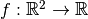
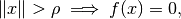
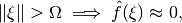
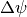
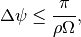
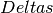
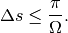

parallel_beam_geometry¶
-
odl.tomo.geometry.parallel.parallel_beam_geometry(space, angles=None, det_shape=None)[source]¶ Create default parallel beam geometry from
space.This is intended for simple test cases where users do not need the full flexibility of the geometries, but simply want a geometry that works.
This default geometry gives a fully sampled sinogram according to the Nyquist criterion, which in general results in a very large number of samples.
Parameters: space :
DiscreteLpReconstruction space, the space of the volumetric data to be projected. Needs to be 2d or 3d.
angles : int, optional
Number of angles. Default: Enough to fully sample the data, see Notes.
det_shape : int or sequence of int, optional
Number of detector pixels. Default: Enough to fully sample the data, see Notes.
Returns: geometry :
ParallelGeometryIf
spaceis 2d, returns aParallel2dGeometry. Ifspaceis 3d, returns aParallel3dAxisGeometry.Notes
According to Mathematical Methods in Image Reconstruction (page 72), for a function  that has compact support

and is essentially bandlimited

then, in order to fully reconstruct the function from a parallel beam ray transform the function should be sampled at an angular interval  such that

and the detector should be sampled with an interval  that satisfies

The geometry returned by this function satisfies these conditions exactly.
If the domain is 3-dimensional, the geometry is “separable”, in that each slice along the z-dimension of the data is treated as independed 2d data.
References
Examples
Create geometry from 2d space and check the number of data points:
>>> space = odl.uniform_discr([-1, -1], [1, 1], [20, 20]) >>> geometry = parallel_beam_geometry(space) >>> geometry.angles.size 45 >>> geometry.detector.size 29